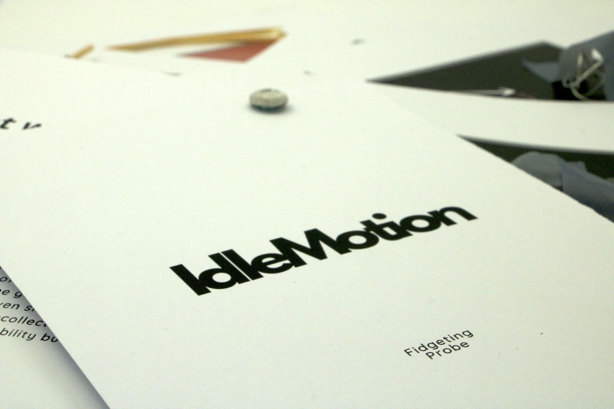

A two-part project: a cultural probe exploring fidget objects and everyday habit, and a kinetic sculpture of fingers in perpetual circular motion.

Research + Sculpture
Cultural Probe, Observation
Zine, Kinetic Sculpture
Solo Project
The first part of Idle Motion is a research-driven design project investigating the role of fidget objects in everyday life. Using cultural probe methodology, participants were given a set of fidget toys and asked to interact with, rank, and respond to them over several days.
Observations and material gathered from the probe were compiled into a zine documenting patterns, preferences, and behaviors — revealing how tactile habits reflect personality, focus, and cultural context.
The second part is a kinetic sculpture built around a loop of fingers in continuous circular rotation. The piece translates the subconscious, repetitive motion of fidgeting into a mechanical, perpetual form — making visible what is usually invisible and automatic.
Together, the two parts frame idle motion as both a subject of inquiry and a material phenomenon: something observed and documented in Part I, and physically embodied in Part II.